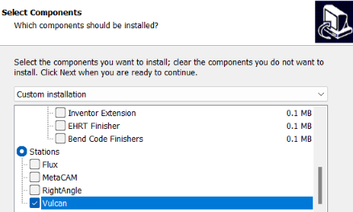

Select a Program in the programs list and use edit command to edit the program. The layout is checkout from the Praxis and is locked for editing. Update the program in Vulcan and press on done button to save the changes back to Praxis. Praxis checks the layout for validation errors and adds it back to the production queue if everything is OK.
The installation steps suggested in the start of this notes is more useful for testing and demo where both Vulcan, Praxis are needed on the same computer. A simpler Vulcan only option can be selected during the Praxis installation to skip a full Praxis install at the Controls. Select Stations • Vulcan on components page to pick this option. In this mode, existing only Praxis monitor with Vulcan addin is installed to link Vulcan to the Praxis.
